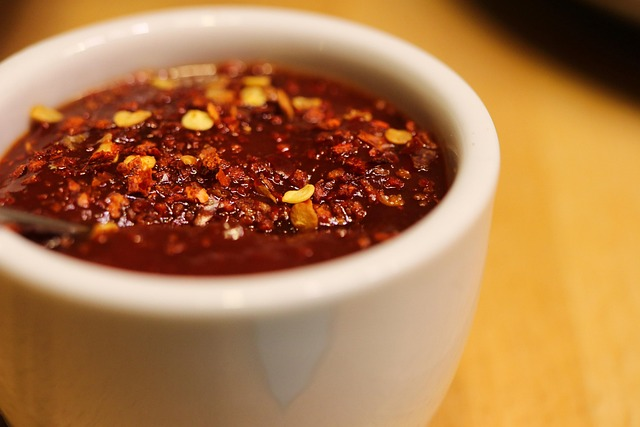

Home
Big Game Day Dip

Description
With this game day dip you are sure to knock the socks off of your guest. A simple but effective recipe for a delicious dip.
Ingredients
- 1-2lb loaf of processed cheese like velveeta, cubed
- 1lb bulk spicy pork sausage
- 1 24oz jar of hot salsa
- 1/2 cup hot peepr sauce
- 3 large jalepeno peppers, chopped(Optional)
Steps
- Melt processed cheese in a slow cooker on Low.
- Cook and stir pork sausage in a large skillet over medium heat until browned and crumbly, about 10 minutes; drain excess grease.
- Mix sausage into processed cheese in the slow cooker. Stir in salsa, hot sauce, and jalapeño peppers.
- Cook on Low for 2 hours; serve hot.